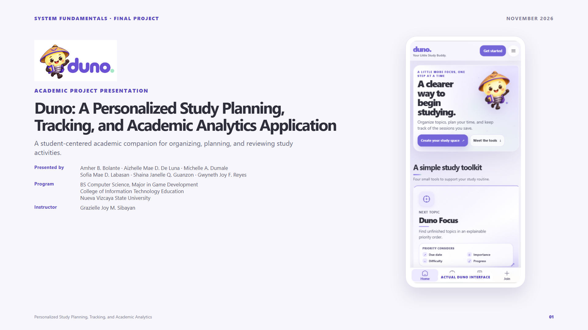
01 · Duno: A Personalized Study Planning, Tracking, and Academic Analytics Application
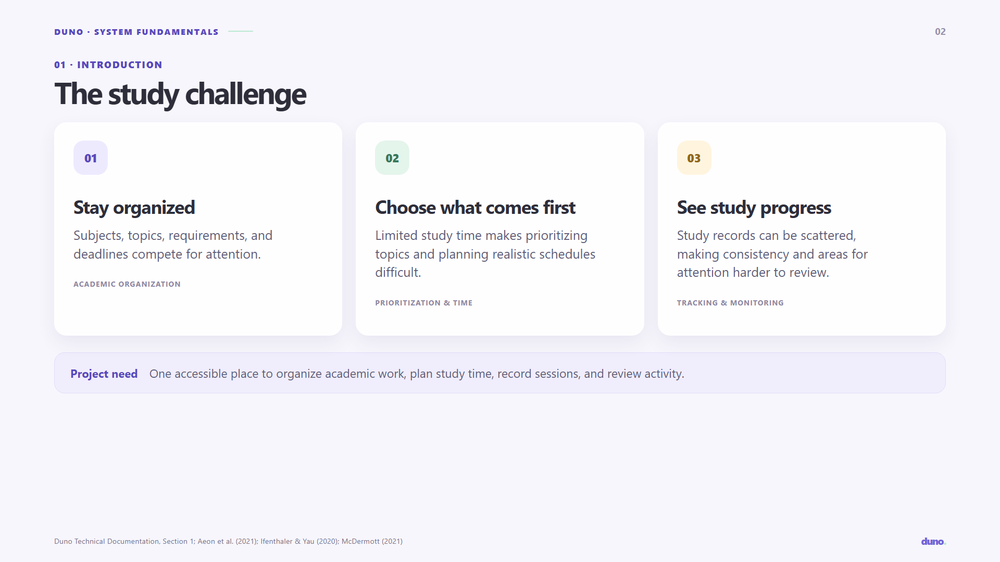
02 · The study challenge
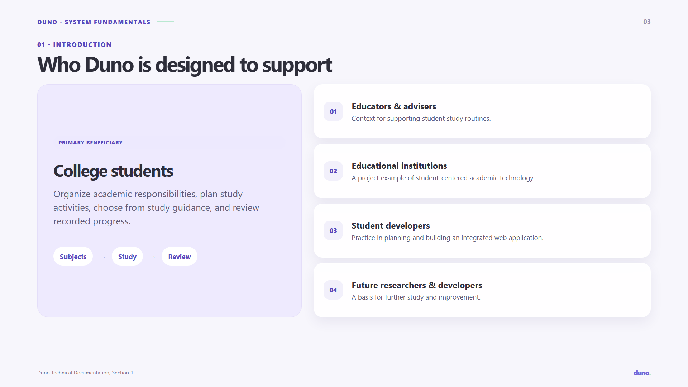
03 · Who Duno is designed to support
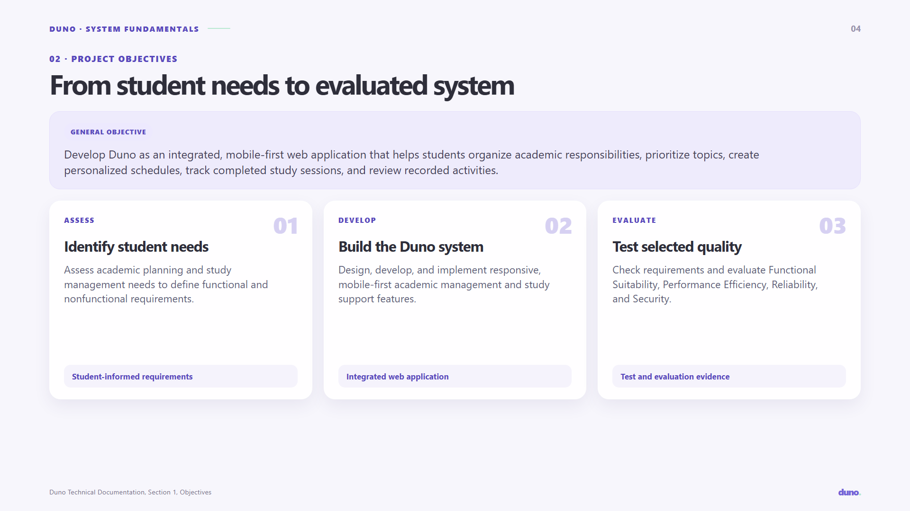
04 · From student needs to evaluated system
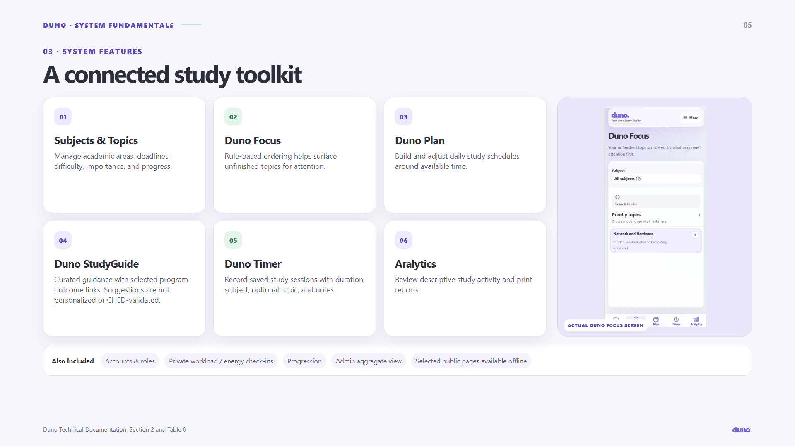
05 · A connected study toolkit
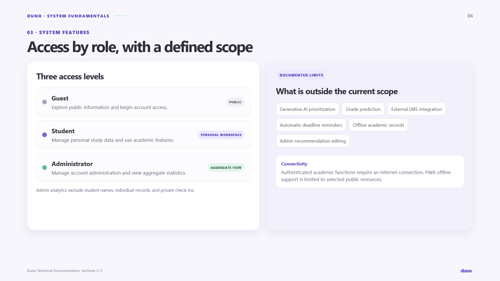
06 · Access by role, with a defined scope
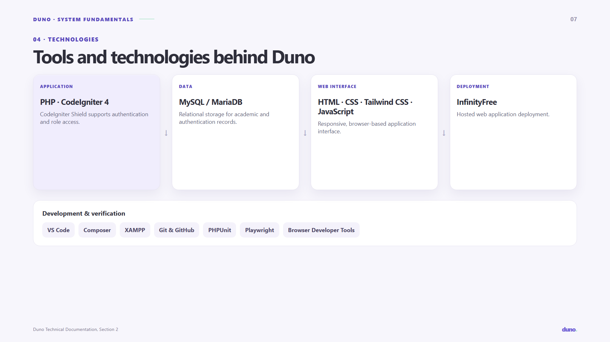
07 · Tools and technologies behind Duno
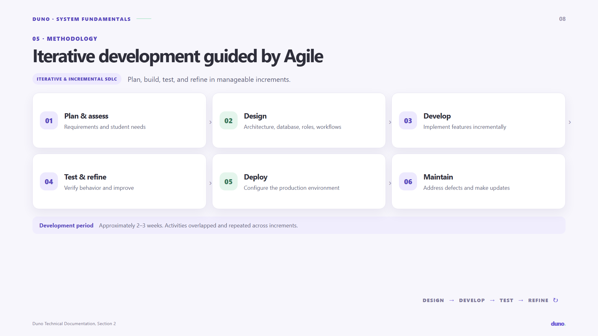
08 · Iterative development guided by Agile
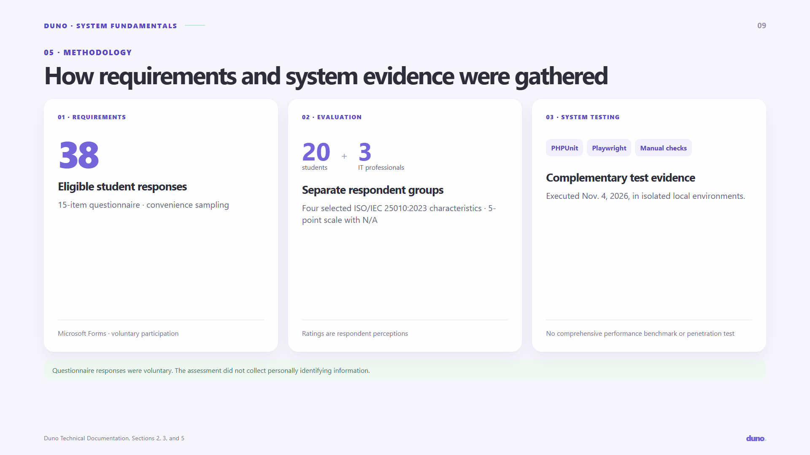
09 · How requirements and system evidence were gathered
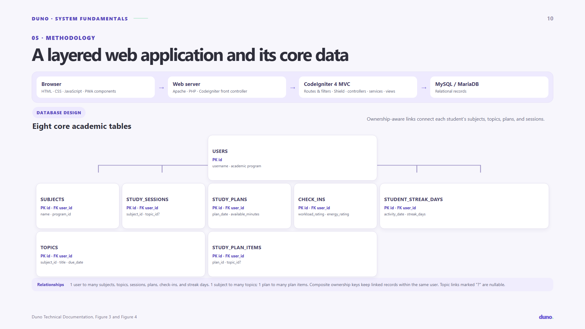
10 · A layered web application and its core data
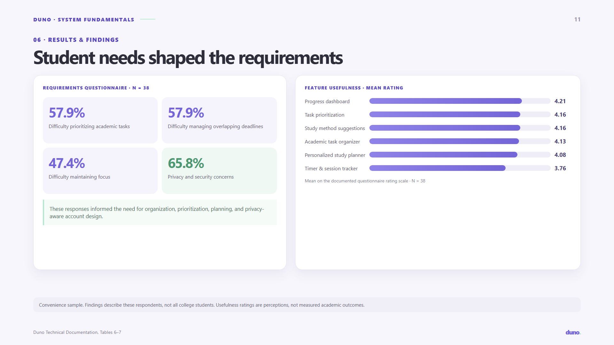
11 · Student needs shaped the requirements
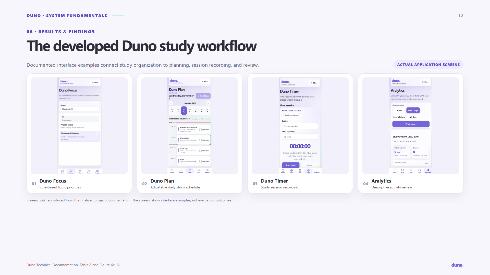
12 · The developed Duno study workflow
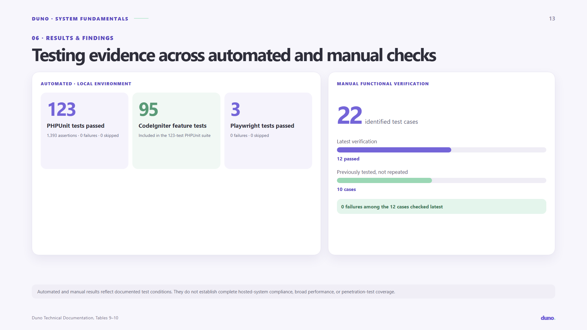
13 · Testing evidence across automated and manual checks
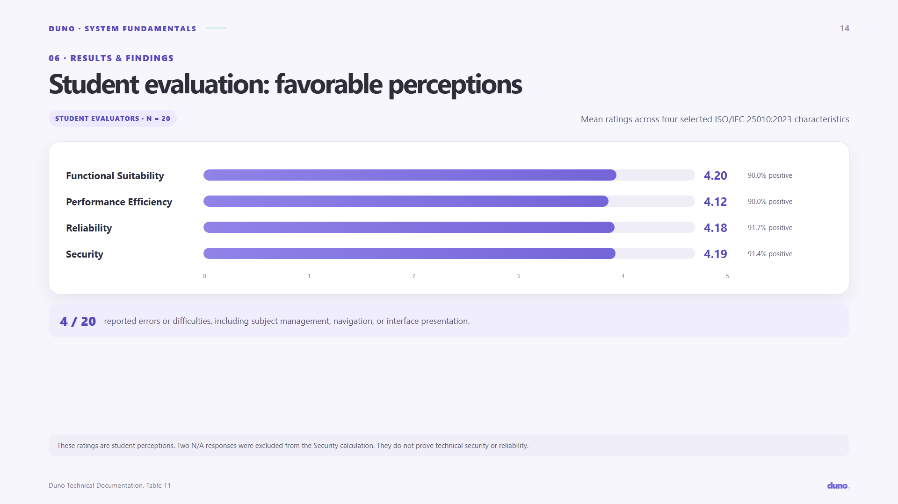
14 · Student evaluation: favorable perceptions
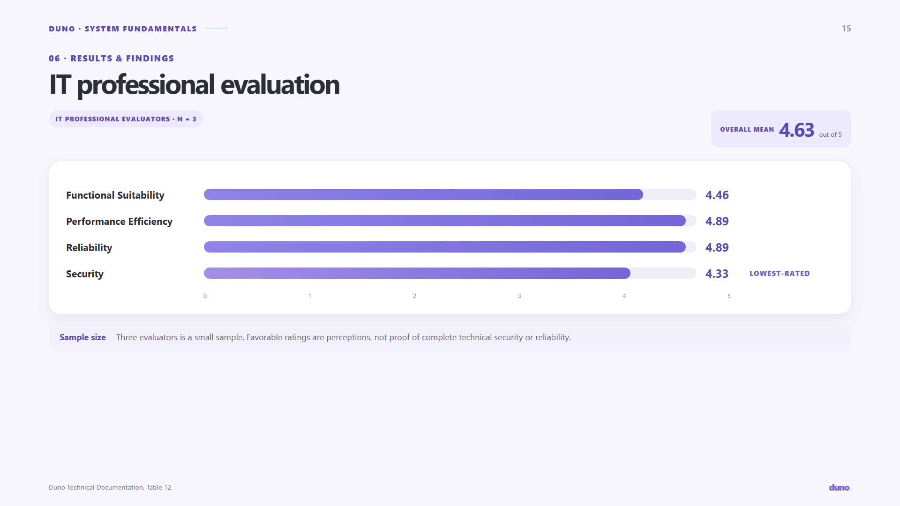
15 · IT professional evaluation
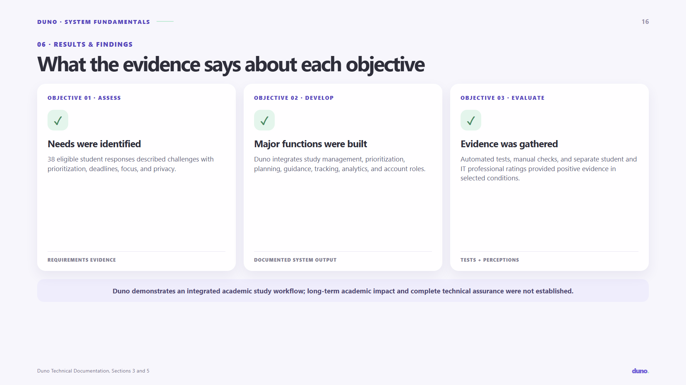
16 · What the evidence says about each objective
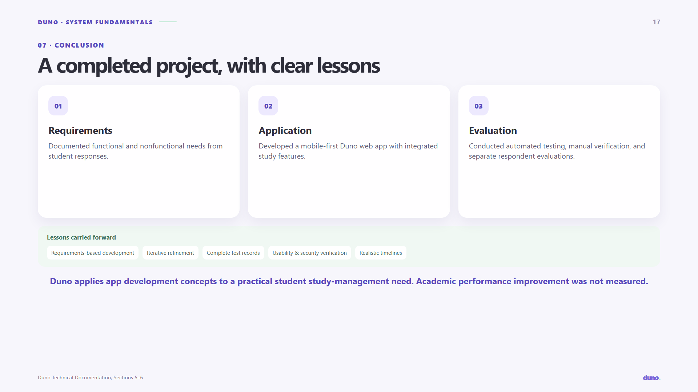
17 · A completed project, with clear lessons
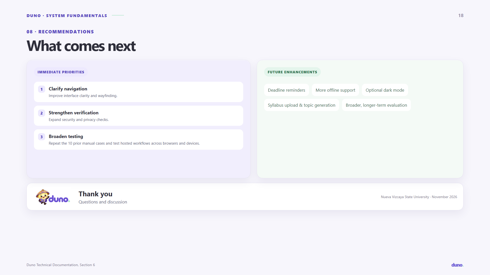
18 · What comes next